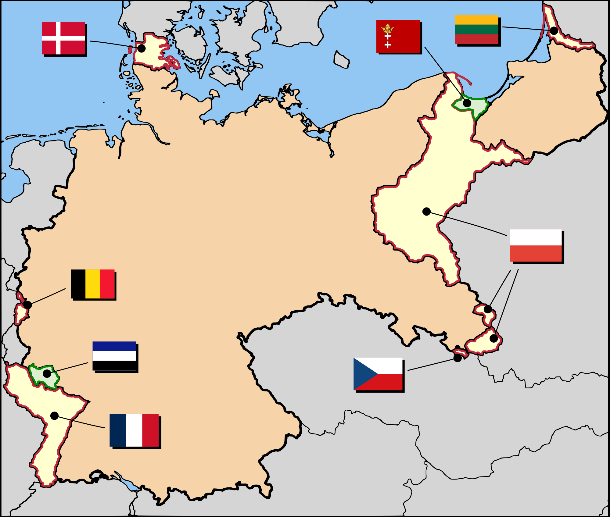
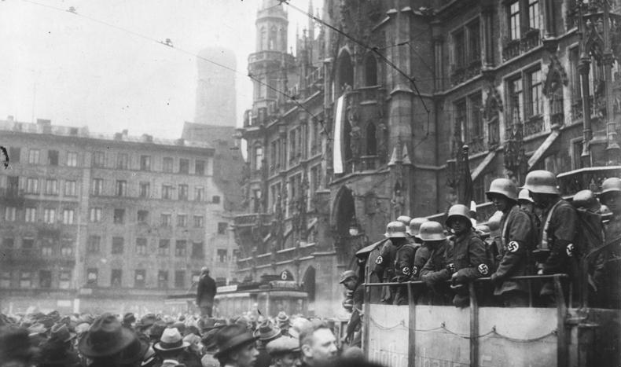
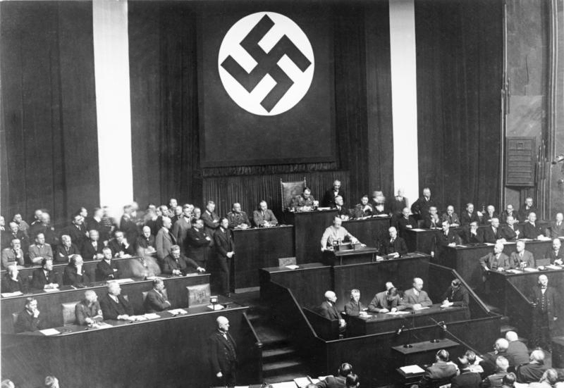
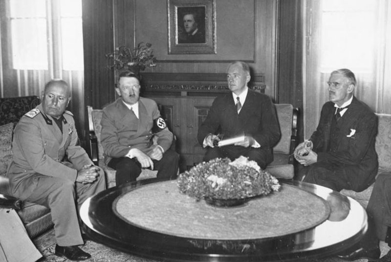

De Eerste Wereldoorlog
 Aan het eind van de Eerste Wereldoorlog lag Europa in puin. Het hele continent stond op zijn kop. De Centrale mogendheden die bestonden uit Duitsland, Oostenrijk-Hongarije, Bulgarije en het Ottomaans Rijk hadden de oorlog verloren tegen de geallieerden Frankrijk, het Britse Rijk en de Verenigde Staten. Duitsland werd als de hoofdschuldige van de oorlog aangewezen door de geallieerden. Het land moest miljarden herstelbetalingen betalen aan de geallieerden. Daarbij moesten ze ook nog eens land afstaan aan hun buurlanden in Europa. Niet alleen land in Europa, maar ook hun kolonies in Afrika en Azie.
De Weimar Republiek
 In 1919 werd Duitsland een republiek; de Weimar Republiek. In het begin (1919-1923) was de republiek erg instabiel. Het land printte veel geld om hun herstelbetalingen af te betalen met hyperinflatie als gevolg. In 1923 pleegde een zekere Adolf Hitler samen met zijn prominente partijgenoten van de NSDAP een mislukte coup te plegen in Munchen. Als gevolg kreeg Hitler een celstraf van vijf jaar, maar na negen maanden al hij al vrij. In zijn tijd in de gevangenis schreef hij zijn boek 'Mein Kampf' dat al erg snel bekend werd in heel Duitsland.
Hitler aan de macht
 In oktober 1929 kwam de plotselinge ineenstorting van de aandelenkoersen op de beurs van Wall Street New York. Dit had niet alleen ernstige gevolgen voor Amerika maar ook voor de rest van de wereld met name Duitsland. Duitsland had een hoop geld geleend van de Amerikanen (het Dawes Plan) om hun economie weer op gang te krijgen, maar de bankiers trokken snel hun geld terug vanwege de Crash en dus onstond in Duitsland een groot percentage werkloosheid. Dit was het goede moment voor Hitler om de macht te grijpen. Hij zou van Duitsland een groot en machtig rijk maken en de meerderheid van de Duitse bevolking vertrouwde hem. Hij won de statenverkiezingen in november 1932 met een grote meerderheid. Hitler werd ingezworen op 30 januari 1933 als kanselier, maar de volledige macht greep hij pas een jaar later na de dood van Paul van Hindenburg in augustus 1934.
Expansie
 Hitler wilde van Duitsland een groot rijk maken en dat deed hij. Op 7 maart 1936 beval hij Duitse strijdkrachten op te rukken naar het Ruhrgebied. Dat gebied was een gedemilitariseerde zone, maar Frankrijk en het VK deden niks. In 1938 annexeerde hij Oostenrijk en in Munchen werd bepaald dat het Sudetenland van Tsjechoslowakije naar Duitsland moest gaan, omdat daar veel etnische Duitsers leefden, maar in de overeenkomst stond dat Hitler niet de rest van Tsjechoslowakije mocht binnenvallen. Daar hield Hitler zich niet aan en in maart 1939 vielen Duitse strijdkrachten de rest van Tsjechoslowakije binnen. Vervolgens ging Hitler de confrontatie aan met Polen, omdat Polen veel Oost-Duits grondgebied kreeg na de Eerste Wereldoorlog. Op augustus 1939 viel hij ook Polen binnen, maar het VK en Frankrijk waarschuwden Hitler vooraf dat als hij Polen binnenviel zij Polen te hulp zouden schieten. Hitler zag dat als een bluf, maar dat was het zeker niet, want op 3 september verklaarden Frankrijk en het VK de oorlog aan Duitsland.